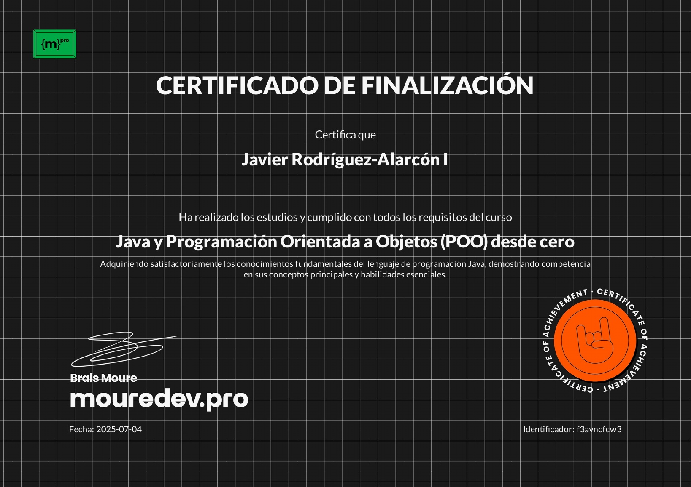

Proxmox casolà
Vaig muntar un entorn de virtualització domèstic amb Proxmox per aprendre sobre servidors, contenidors, emmagatzematge i gestió de màquines virtuals en un laboratori personal.
Desenvolupador · Estudiant
Soc en Javier Rodríguez i estudio el primer curs de Desenvolupament d'Aplicacions Multiplataforma.
Aquest és el meu lloc web, on comparteixo els meus projectes i les aventures que em passen en el món de la programació.
Vaig muntar un entorn de virtualització domèstic amb Proxmox per aprendre sobre servidors, contenidors, emmagatzematge i gestió de màquines virtuals en un laboratori personal.
Vaig dissenyar i desplegar una infraestructura empresarial amb Active Directory, polítiques de seguretat i segmentació de xarxa amb Fortinet, enfocada a l'autenticació, el control d'accés i la defensa perimetral.




(Fes curl a aquest lloc web i t'enduràs una sorpresa) © Javier Rodríguez-Alarcón Aquesta és la normativa del domini .cat Termes i condicions · Política de privacitat · Política de galetes